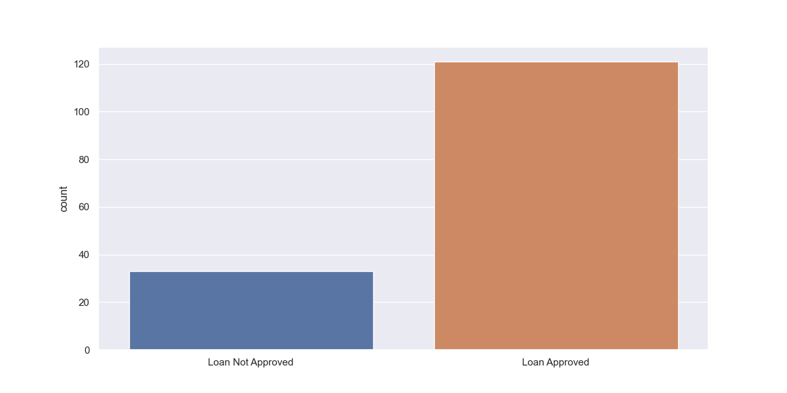

The banking system is significantly affected by loan defaulters. Predicting loan defaulters early can help banks reduce their Non-Performing Assets (NPA), and improve profitability.
Using machine learning algorithms, specifically Decision Trees and Logistic Regression, this project predicts loan defaulters by analyzing various attributes such as credit history, income, and loan amount.
The model achieved an accuracy of 81%, successfully identifying patterns in creditworthiness. It helped to predict potential loan defaulters and optimized the bank’s loan approval process.
I was responsible for building and optimizing the machine learning models. I implemented the Decision Tree and Logistic Regression algorithms using Python and handled data preprocessing, model training, and evaluation. I also collaborated on designing the project's data flow and testing the model for real-world accuracy.
This project aims to predict loan approvals using machine learning. By analyzing past loan records and various personal attributes such as credit history and income, the model identifies potential defaulters. The system uses datasets to develop a Decision Tree-based classifier and a Logistic Regression model for better prediction of the loan default probability.
